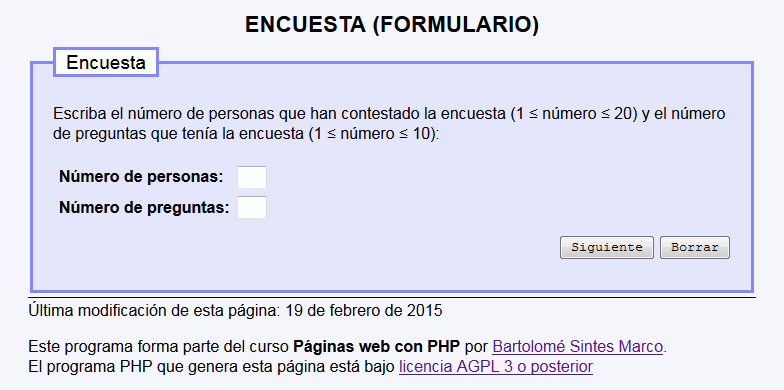
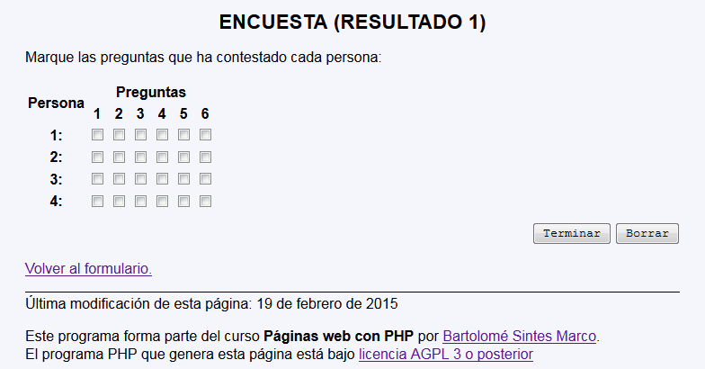
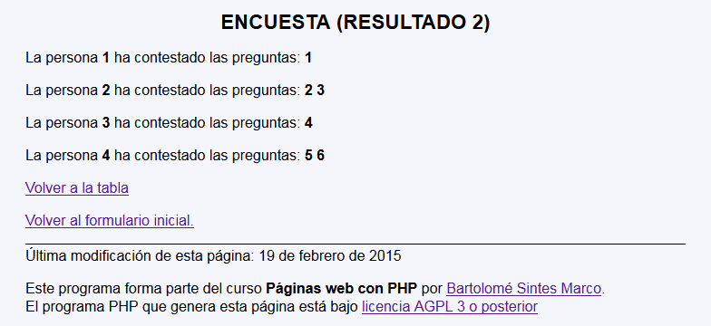

Encuesta - Ejemplo de programa
Nota: El día del examen los alumnos no tienen acceso a este ejemplo, solamente tienen acceso a las capturas del apartado anterior.
Un ejemplo de programa puede probarse en la ventana siguiente:
En este examen se debe crear un programa para indicar cuánta gente ha contestado un encuesta. El programa tendrá tres páginas:
<?php
function recogeMatriz2($var)
{
$tmpMatriz = [];
if (isset($_REQUEST[$var]) && is_array($_REQUEST[$var])) {
foreach ($_REQUEST[$var] as $indice => $fila) {
$indiceLimpio = trim(htmlspecialchars($indice, ENT_QUOTES, "UTF-8"));
if (is_array($fila)) {
foreach ($fila as $indice2 => $valor) {
$indice2Limpio = trim(htmlspecialchars($indice2, ENT_QUOTES, "UTF-8"));
$valorLimpio = trim(htmlspecialchars($valor, ENT_QUOTES, "UTF-8"));
$tmpMatriz[$indiceLimpio][$indice2Limpio] = $valorLimpio;
}
}
}
}
return $tmpMatriz;
}
?>



<form action="encuesta_3.php" method="get">
<table>
<tbody>
<tr>
<th rowspan="2">Persona</th>
<th colspan="6">Preguntas</th>
</tr>
<tr>
<th>1</th>
<th>2</th>
<th>3</th>
<th>4</th>
<th>5</th>
<th>6</th>
</tr>
<tr>
<th>1:</th>
<td><input type="checkbox" name="r[1][1]" /></td>
<td><input type="checkbox" name="r[1][2]" /></td>
<td><input type="checkbox" name="r[1][3]" /></td>
<td><input type="checkbox" name="r[1][4]" /></td>
<td><input type="checkbox" name="r[1][5]" /></td>
<td><input type="checkbox" name="r[1][6]" /></td>
</tr>
<tr>
<th>2:</th>
<td><input type="checkbox" name="r[2][1]" /></td>
<td><input type="checkbox" name="r[2][2]" /></td>
<td><input type="checkbox" name="r[2][3]" /></td>
<td><input type="checkbox" name="r[2][4]" /></td>
<td><input type="checkbox" name="r[2][5]" /></td>
<td><input type="checkbox" name="r[2][6]" /></td>
</tr>
<tr>
<th>3:</th>
<td><input type="checkbox" name="r[3][1]" /></td>
<td><input type="checkbox" name="r[3][2]" /></td>
<td><input type="checkbox" name="r[3][3]" /></td>
<td><input type="checkbox" name="r[3][4]" /></td>
<td><input type="checkbox" name="r[3][5]" /></td>
<td><input type="checkbox" name="r[3][6]" /></td>
</tr>
<tr>
<th>4:</th>
<td><input type="checkbox" name="r[4][1]" /></td>
<td><input type="checkbox" name="r[4][2]" /></td>
<td><input type="checkbox" name="r[4][3]" /></td>
<td><input type="checkbox" name="r[4][4]" /></td>
<td><input type="checkbox" name="r[4][5]" /></td>
<td><input type="checkbox" name="r[4][6]" /></td>
</tr>
</tbody>
</table>
<p class="der"><input type="submit" value="Terminar" />
<input type="reset" value="Borrar" />
<input type="hidden" name="personas" value="4" />
<input type="hidden" name="preguntas" value="6" /></p>
</form>
Nota: El día del examen los alumnos no tienen acceso a este ejemplo, solamente tienen acceso a las capturas del apartado anterior.
Un ejemplo de programa puede probarse en la ventana siguiente: